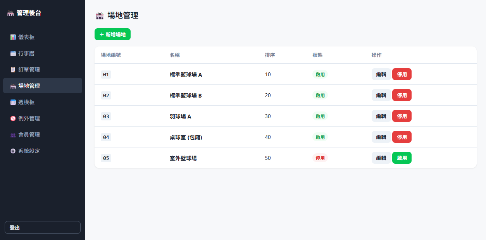
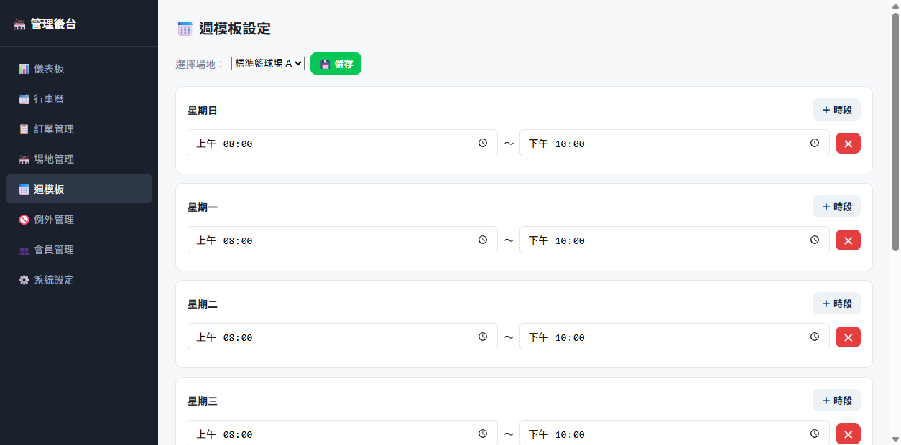
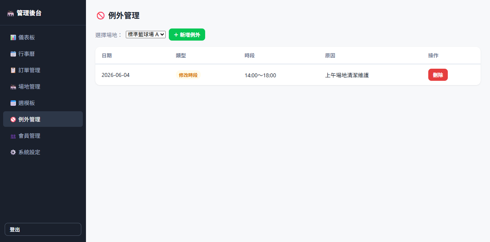

Open the booking entry
Customers enter through LINE, choose a service or venue, and explore options without waiting for manual replies.
A call comes in. A LINE message arrives. A colleague checks the calendar while someone else updates a spreadsheet. ARZ AI starts with this daily friction and connects booking entry points, operating rules, review states and existing systems into one workable flow.
This page describes product design and project implementations. The interactive booking on our homepage is a front-end demonstration and does not create real orders. Feature availability and onboarding depend on the deployed product version.
Try the full booking and operator walkthrough ↗ (fictional browser simulation).
A date picker alone cannot coordinate an operation. Each appointment needs to pass through a reliable sequence of rules, review and follow-up. Here is the process we developed from venue scheduling work.
Customers enter through LINE, choose a service or venue, and explore options without waiting for manual replies.
Use opening hours, closures, session length, buffers and occupied slots to calculate valid choices.
Check conflicts again when a customer confirms, reducing the risk of simultaneous double bookings.
Operators manage requests, approval states and exceptions from an administration workflow.
Depending on deployment, send reminders and export records for existing business software.
These screenshots come from the sports venue LINE booking project. They show implemented venue resources, weekly opening hours and exception management. They are engineering project screens; they do not imply that every business already has access to a standard SaaS product.



The walkthrough calculates available slots and lets you submit, review and approve a sample request. Data stays in the demo page and creates no real booking.
Source: ARZ AI sports venue LINE booking engineering project. The public gallery uses settings screens without customer names, phone numbers or order records.
We are turning recurring project rules into configurable modules. The platform direction lets an administrator create business accounts and assign industry templates while each business defines its resources, services, hours and policies.
LINE, mobile web and embedded forms
Resources, opening hours, form fields and exceptions
Availability, buffers, conflict checks and order states
Calendar, human review, exports and documents
Claude may help interpret requests, organize details and draft replies. Explicit rules and authorized staff confirm availability, payments and consequential changes.
This is a product direction diagram. Scheduling and document workflows have engineering project foundations; multi-business accounts, tenant data isolation and self-service onboarding are still being productized and are not presented as a launched multi-tenant SaaS.
Reuse the common logic while configuring what genuinely differs across industries: resources, data fields and operating rules.
A venue may have multiple spaces, opening hours, buffers and exceptions affecting bookable time.
Appointments can be based on consulting services, classes or instructors. Configurable resources are on the platform roadmap.
Registration can extend into pricing options, orders and generated documents. A separate implementation informs these modules.
We learn from demanding workflows, validate the rules that matter, and turn the reusable pieces into a platform.
The venue must retain existing workflows while adding LINE. The engineering work covers time slots, buffers, conflict handling, approvals and exports.
Reusable: scheduling / resources / review statesRead full case ↗After people register in LINE, staff still handle payments, orders, event lists and documents. LIFF forms, order states and PDF output provide a repeatable workflow.
Reusable: forms / orders / document generationRead full case ↗We are evaluating Claude API as an assistive layer for interpreting natural language requests, identifying missing details, and drafting answers for staff review.
Turn 'next Tuesday afternoon' into candidate date and time fields without altering bookings.
Extract service, date and contact requirements and ask for any missing information.
Prepare replies and notifications using confirmed business policies, with human review.
AI workflows are being designed and evaluated. Availability, pricing and order status must always be confirmed by business rules and authorized staff.
How are bookings received today? Where does repeated work begin?
Review resources, schedules, approvals, notifications and existing integrations.
Run, review and improve one workflow before expanding use.
Pricing is currently discussed per implementation; no standardized public subscription pricing has been announced. Availability depends on the current product stage.
Booking, registration, reconciliation or document work — let's talk about what your team repeats every day.
Discuss SaaS adoption ↗founder@arz-ai.stream